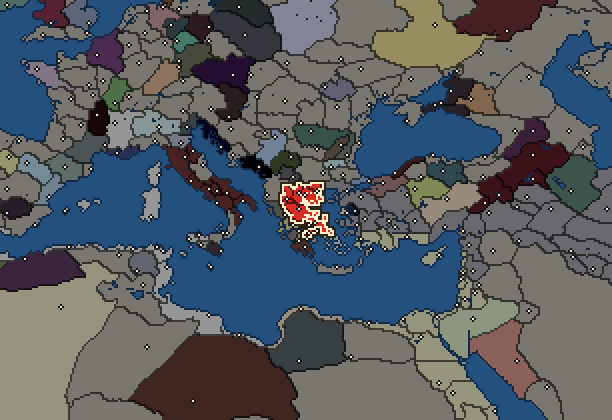

Antigonid Kingdom


- Difficulty Easy
- Western Hellenistic culture
- Believes
 Macedonian
Macedonian - 7 settlements
- Capital Pella
- 2,800 manpower
- 1 character
- 24 faction units
- 437 regional units
The campaign brief
"For famous men have the whole earth as their tomb." – Perikles
Four centuries before our time, Karanos of Argos was the first man to claim the crown of Macedon. His treacherous brother Pheidon had expelled him from the city of Diomedes and the stupendous oracle of Delphi, with the voice of Apollo himself, led Karanos into Macedon. There he reached the town Edessa in Emathia and renamed it Aigai, after the flock of goats he had followed to find the way during a terrible storm. Karanos united the tribes of Macedon and established the kingdom. Some of our historians might say this story is purely a product of mythology, but who are we to foster doubts about the gods of Olympos?
Just north of the godly mountain itself, the young kingdom soon began to flourish, albeit lacking the dense population of Southern Greece. But the subjects of Macedon were not as refined as those Greeks I mentioned before, and their Barbarian heritage was laid bare when they submitted to the power of Persia without struggle. The Macedonian kings became his vassals and paid regular tributes to the Great King. But at the end of his reign, Alexander I. (ca. 498-454 BC) regained the kingdom's independence. During the years of the terrible war between the Peloponnesians and the Athenians, Macedon sided mostly with the latter. But it was after the end of that war that Macedon began to enter the stage of the Greek World on more prominent terms. The great king Archelaos I (413-399 BC) reformed the state and the army and improved Macedon's trade relations.
His successor Amyntas III (393-370 BC) scarcely survived an Illyrian invasion at the beginning of his reign, but a formidable alliance with Sparta saw him defeat the Chalkidian League under their mighty leader, the city of Olynthos. Following the death of Amyntas, Macedon sank into chaos. Disastrous wars against Athens and Olynthus over Chalkidike and Amphipolis were only exceeded in misfortune when the gods decided to hand their favour to the Theban general Pelopidas. All on his own, only accompanied by his retinue, he walked into Macedon and conquered it with a bag of precious gold, which was enough to convince the miserable mercenaries of the Macedonian king. These years of embarrassment only came to an end when the brilliant hero Philip II (359-336 BC) rose to the throne. The gods and goddesses of Olympos had benevolently endowed him with the grandest of skills and he reformed the poor crowd that was Macedon's army into a force to be reckoned with. Philip introduced the long spear we know now as the sarissa for his phalanx, improved the royal company cavalry and added both the guard of the hypaspists as well as the ferocious Agrianians. These new troops showed their worth in the battle of Crocus Field (352 BC) before smashing the might of Olynthos once and for all in 349 BC. Philip the Great won victory after victory and in 338 BC his heroes crushed the armies of Athens and Thebes on the battlefield of Chaironeia. Now the lord of all Greece, he was on the apex of his impressive power. But the Moirai are always erratic, and hardly two years after his greatest victory, Philip was murdered.
Everyone knows what happened after the death of Philip, when his son was crowned as Alexander III. The red-haired young hero sacked the powerful city of Corinth before he went on to take on the big task of his life: his campaign into Persia. The little corps of brave, Greek heroes overcame both nature and the millions of men commanded by the Great King to defeat him on numerous occasions and conquer his mighty empire. At the battle of Gaugamela (331 BC) Alexander earned the most brilliant of victories in the history of mankind and proved himself worthy of the favour the gods had granted him. But the restless demigod successfully pursued Dareios through the Zagrous Mountains and into the Barbarian Northeast, where he subdued peoples the Greeks had never even heard of before. There he married the beautiful princess Roxane, but in Susa he also espoused Stateira and Parysatis, who were related to the last Great King. But again, the Moirai thought that Macedon had got enough glory, and they prevented Alexander from conquering the Arabians and the Carthaginians by calling him up to Olympos. After the death of Alexander, his generals, now called Diadochoi ('Successors'), began to tussle for his empire.
Among the Diadochoi was Antigonos Monophtalmos ('One-Eyed'), who was also the most powerful and the most ambitious. When the regent Perdikkas had died, and Alexander's son, who was the child of Roxane, was still too young, Antigonos tried to gain the supremacy over Alexander's empire. The One-Eyed was a formidable warrior and fought many battles against his multiple foes, crushing them far and wide. To everyone's surprise, the secretary Eumenes of Kardia emerged as his most enterprising rival and Eumenes managed to inflict heavy casualties on Antigonos in the battle of Paraitakene (Autumn 316 BC). But the secretary's victory was to be to no avail, as the ruthless Antigonos followed him into the Persis, where both armies met again at Gabiene at the end of the year. Although Eumenes proved to be a sound commander again, he was eventually betrayed by his own men. Having gotten rid of Eumenes, Antigonos expelled Seleukos from Babylon and was at the height of his power. This prompted the other remaining Diadochoi, clever and able men themselves, to ally against the mighty One-Eyed. Despite this, Antigonos captured Phoenicia and Syria in the spring of 314 BC, which was followed by the occupation of Bithynia and Caria. But in the following year Ptolemaios, the pharaoh of Egypt, snatched Cyprus from under his rule, and together with Seleukos he defeated Antigonos' fiery son Demetrios 'the Besieger' at Gaza (312 BC).
During this time, the treacherous Cassander held Macedon and ordered the murder both of the mother of the godly Alexander as well as the king Alexander IV. But young Alexander had ruled only in name, while Olympias had been a real rival for Cassander. In 306 BC, the king was defeated by Demetrios at the battle of Salamis (Cyprus) and carried away by the glory of the victory Antigonos and Demetrios proclaimed themselves as kings. The other diadochoi followed them in doing so, but it was Antigonos who paid for his hybris when the alliance of his foes defeated and killed him at Ipsos (302 BC). Demetrios survived but fled into the unknown. When five years later Cassander died of the dropsy, this opened the chance for Demetrios to reclaim the throne of Macedon. However, Ptolemaois, Pyrrhos of Epiros, and Athens turned against him and Demetrios had to flee the country again, before the relentless Seleukos captured him on campaign in Asia. The Besieger died in 286 BC.
Ptolemaios Keraunos, the oldest son of Ptolemaios, then made himself king of Macedon after his dishonourable murder of Seleukos. Antigonos Gonatas, son of Demetrios, only commanded a small corps of Macedon's elite troops at this time and seemed to be in no position to challenge Keraunos for the throne. But the invasion of the horrible Celts into Macedon and Greece led to the murder of the betrayer and Antigonos seized the moment. A swift attack brought the Barbarians to their heel, and once the majority of the invaders had passed on into Asia, Antigonos faced few problems recruiting the remaining Celts in Greece into his own army. In Macedon, the people were relieved that the rule of their illegitimate king had come to an end and supported Antigonos as their new monarch.
King Pyrrhos of the Epirotes, however, returned from Italy at this time and quickly invaded Macedon without warning. Only with the help of the Greek cities did Antigonos survive, and when Pyrrhus died in the streets of Lakedaimon, the rightful rule of Antigonos over the kingdom was finally secured. Antigonos Gonatas is not content with just Macedon, however, and despite controlling the garrisons of Demetrias, Eretria and Akrokorinthos, the king still wants to expand his control over Hellas. Will he be able to succeed and finally squash the independence of both Athens and Sparta? Or will the mighty Pharaoh of Egypt, Ptolemaios II, intervene and stop the ambitions of the Antigonid ruler? With an army of Macedonians, Greeks and Celts at his disposal, Antigonos is well equipped for the war in the South. But he must never forget the threat of the tribes of Illyria and Thracia, who are looming beyond his border. Now is the time to prove if Antigonos Gonatas is a worthy successor of the crown of Philip and Alexander...
Starting settlements
Antigonid Kingdom begins with 7 settlements and 2,800 manpower.
| Settlement | Region | Size | Manpower | Already built | Settlement | Region | Size | Manpower | Already built | Settlement | Region | Size | Manpower | Already built |
|---|---|---|---|---|---|---|---|---|---|---|---|---|---|---|
| Pella (capital) | Emathia | town | 400 | 2 buildings | Corinth | Korinthia | town | 400 | 2 buildings | Thessalonike | Mygdonia | town | 400 | 2 buildings |
| Larissa | Thessalia | town | 400 | 2 buildings | Amphipolis | Edonis | town | 400 | 2 buildings | Argos Orestikon | Orestis | town | 400 | 2 buildings |
| Chalkis | Euboia | town | 400 | 2 buildings |
What is already built in each settlement
Pella, in Emathia: Governor's House, Paved Roads
Larissa, in Thessalia: Governor's House, Paved Roads
Chalkis, in Euboia: Governor's House, Paved Roads
Corinth, in Korinthia: Governor's House, Paved Roads
Amphipolis, in Edonis: Governor's House, Paved Roads
Starting diplomacy
Antigonid Kingdom begins the campaign with no allies, no trade agreements and no wars.
Like every faction, it is also at war with the  Free Peoples, who hold every settlement no faction does.
Free Peoples, who hold every settlement no faction does.
Starting characters
| Name | Role | Age | |||||||||
|---|---|---|---|---|---|---|---|---|---|---|---|
| Antigonos | General | 50 |
Reforms
For every faction: Military innovations have arrived!, Second wave of military innovations have arrived!.
Units you can recruit
The same as in the main campaign.